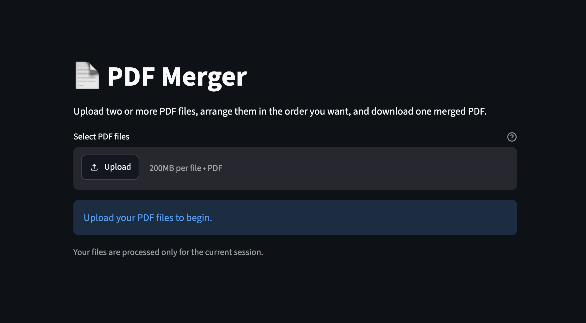

HousingPulse Dashboard
Interactive Streamlit dashboard analyzing U.S. housing affordability using HUD and FHFA data. Features affordability rankings, trend analysis, state comparisons, and visual analytics.
I hold a Bachelor's degree in Business Administration with a concentration in Information Systems and Analytics and am currently pursuing a Master's degree in Public Administration at San José State University. I also bring over 10 years of experience in the hospitality industry, where I developed strong skills in operations, customer service, team leadership, and problem-solving. My background combines operations, data analytics, and technology, with experience using Python, SQL, Streamlit, and data visualization tools to solve real-world problems. Through both my professional experience and academic projects, I've worked on improving processes, analyzing data, and building practical solutions that support better decision-making. I'm passionate about finding ways to make organizations more efficient, especially in the public sector, and I hope to use technology and data to create meaningful, community-focused solutions.
My interests include data analytics, healthcare systems, operations, sports analytics, public administration, and using technology to improve systems that support my community.
Interactive Streamlit dashboard analyzing U.S. housing affordability using HUD and FHFA data. Features affordability rankings, trend analysis, state comparisons, and visual analytics.

Python-based analytics application with a Tkinter GUI that evaluates player statistics and salary data to identify undervalued or overpaid athletes.

Data analytics project using R to scrape and analyze sentiment from online text sources through text mining, sentiment scoring, and data visualization.

A web application built with Python and Streamlit that allows users to upload multiple PDF files, merge them into one document, and download the completed PDF.